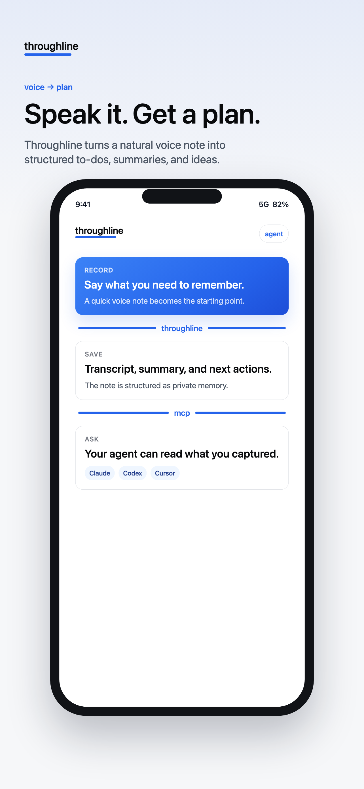
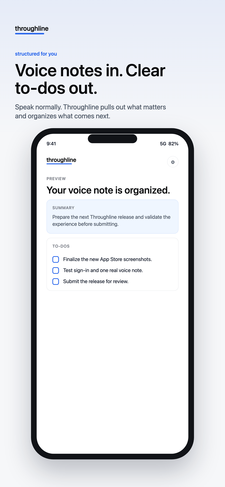
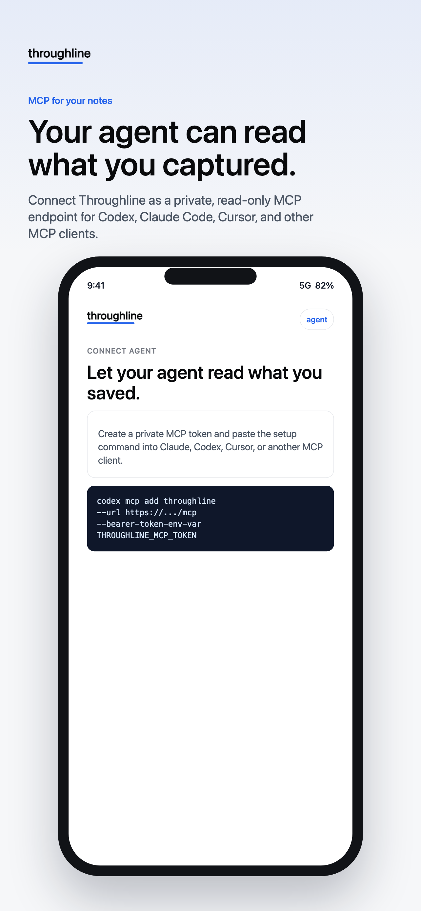

Record the thought
Capture it when stopping to type is impractical.
Personal voice notes for agent-readable context
Record a thought. Throughline turns it into a structured note with a summary and to-dos. Then you can let your chosen agent read saved notes through an owner-scoped, read-only MCP connection.
Get Throughline on the App StoreReal public App Store creative, inspected 2026-08-27.
The workflow
A personal thought can become something you can return to, review, and share with the agent connection you control.

Capture it when stopping to type is impractical.

Return to a readable note, summary, and clear to-dos.

Create an owner-scoped, read-only connection for saved notes.
Personal by design
Use Throughline for personal voice notes while walking, driving, or thinking. It is not a meeting recorder or a replacement for your existing tools.
Resources
Throughline is a personal voice-note workflow for structured context and clear next steps.
Get Throughline on the App Store